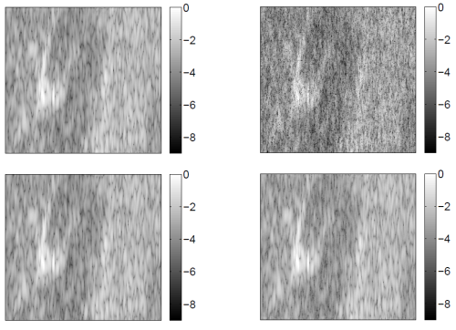
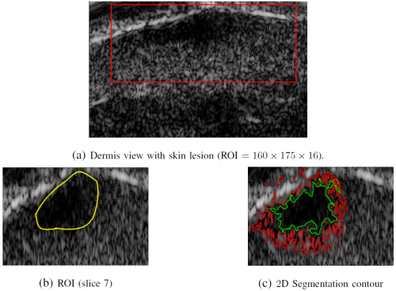

Ultrasound imaging
Fast acquisition and compressed sensing
Because it can be implemented easily in real time, ultrasound imaging (UI) has became one of the most popular imaging modalities.
However, the volume of data acquired during an examination can limit real time implementations and lead to storage issues. Compressed sensing (CS) is based on the idea of sampling a signal directly into its compressed form. This work proposes to exploit the image sparsity in the frequency domain within a Bayesian approach. This Bayesian approach allows
the image sparsity level in the spectral domain to be estimated. Results obtained with a simulated ultrasound image and an in vivo image of a human thyroid gland show a reconstruction performance similar to a classical compressed sensing algorithm from half of spatial samples while estimating the sparsity level during reconstruction.

Fig. 1. Top, left: Original in vivo image of a human thyroid gland. Top, right: 50% of spatial samples kept for the reconstruction.
Bottom, left: image reconstructed by l1 minimization. Bottom, right: image reconstructed by the proposed Bayesian approach.
The algorithm and the main results are detailed in an article presented at IEEE CAMSAP Conf. in 2011.
- article
 [ .pdf - 270ko ].
[ .pdf - 270ko ].
An extension has been proposed to exploit the spatial correlations between the image pixels in the frequency domain. A new Bayesian model based on a correlated Bernoulli Gaussian model is proposed for that purpose. The parameters of this model can be estimated by sampling the corresponding posterior distribution using an MCMC method. The resulting algorithm provides very low reconstruction errors even when reducing significantly the number of measurements via random sampling.
The algorithm and the main results related to this extension are detailed in an article presented at EUSIPCO in 2012.
- article [ .pdf - 151ko ].
Unsupervised classification of skin lesions
This work addresses the problem of jointly estimating the statistical distribution and segmenting lesions in multiple-tissue high-frequency skin ultrasound images. The distribution of multiple-tissue images is modeled as a spatially coherent finite mixture of heavy-tailed Rayleigh distributions. Spatial coherence inherent to biological tissues is modeled by enforcing local dependence between the mixture components. An original Bayesian algorithm combined with a Markov chain Monte Carlo method is then proposed to jointly estimate the mixture parameters and a label-vector associating each voxel to a tissue. The method is then successfully applied to the segmentation of in-vivo skin tumors in high frequency 2D and 3D ultrasound images.

Fig. 2. (a) Log-compressed US images of skin melanoma tumor and the region of interest. (b) Coarse expert annotations. (c) Regular shape of the contour obtained by the level set method (red) and the proposed method (green).
The algorithm and the main results are detailed in an article published in IEEE Trans. Medical Imaging.
- article [ .pdf - 2.4Mo ].